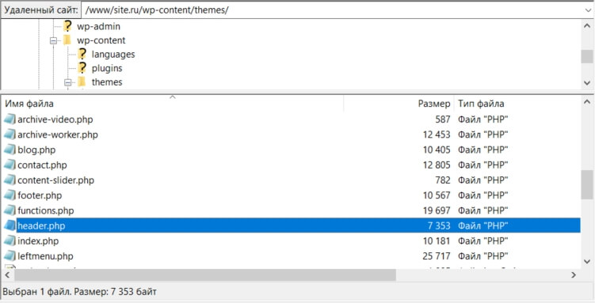

Под кодом страницы обычно подразумевается совокупность элементов на языке разметки HTML, которые служат для ее форматирования и отображения в удобном виде. Чаще всего употребляется вариант названия – HTML-код. Просмотреть код любой веб-страницы можно прямо в браузере.
Для создания страниц необходимо использовать языки веб-программирования. Среди них наиболее широко распространены PHP, Python и Ruby on Rails для Unix-систем, а для Windows характерна разработка динамического контента с использованием средств .NET. Это все касается серверной части, а для программирования на клиентской стороне чаще всего используется JavaScript. Подробнее об этом поговорим в статье ниже.
Где искать код для установки
Установить код в счетчик сайта несложно. Ниже в статье разберем подробно, что и куда внедрять. Сейчас разберемся где искать код для установки метрик.
В Яндекс Метрике. Код находится в настройках: нажмите на кнопку-шестеренку. Выберите вкладку «Счётчик» и перемотайте в конец страницы.
В Neiros. Счетчик для аналитики Neiros поможет отслеживать статистику вашего сайта. Найти и внедрить код можно 2 способами:
- При создании нового проекта на втором шаге. Вы можете просто скопировать инструкцию в соответствующем разделе и отдать ее разработчику.
- Найти код можно в разделе проекты https://neiros.cloud/setting/sites, кликнув на настройки в открывшемся меню.
Для получения достоверных данных, код необходимо устанавливать на каждую страницу.
Куда вставляется код на сайте
Для начала нужно определиться со структурой сайта. Например, нужно подключить javascript, обычно скрипты либо выносят в отдельный файл или размещают в верхней части сайта. За отображение сайта, отвечает несколько файлов. Вот самые популярные в WordPress: index.php; single.php; page.php; header.php; footer.php; sidebar.php; style.css.

Разберем по структуре:
- За вывод верхней части отвечает файл header.php (шапка сайта). Начало этого файла имеет следующий вид:
<!DOCTYPE html> <html <?php language_attributes(); ?>> <head> Сюда вы можете вставить скрипт <?php wp_head(); ?> </head>Между тегами < head > размещают скрипты, которые работают на всех страницах сайта.
К примеру, для каждой темы содержимое этих тегов может быть разным.
- За отображение главной страницы сайта отвечает файл index.php чаще всего с помощью языка php в этом файле объединяется код из других файлов например (header.php, footer.php) тем самым отображаемая страница в браузере собирается из нескольких файлов. Главная страница работает также, как и остальные.
- За вывод сайдбара (боковой блок, меню сайта) отвечает файл sidebar.php сюда же Вы можете, к примеру, добавить блок с рекламой услуги или компании.
- В случае если вы хотите изменить отражение записей блога используйте файл single.php.
- Для изменения страниц сайта используйте следующий файл — page.php.
- Подвал сайта — footer.php, в нем также можно размещать скрипты, его часто используется для вставки счетчиков посещаемости. Туда можно добавить и другие элементы.
- Если вы хотите видоизменить отображение сайта, то вам понадобиться файл стилей style.css.
Чтобы понять куда вставлять код, можно использовать стандартный инструмент Google Chrome для этого нажмите правой кнопкой мыши на свободную часть страницы (любое место) и выберете вкладку просмотреть код. С его помощью мы сможете определить название блока над, под или в который надо вставить ваш код. Для выделения нужного блока нажмите на выделенную красным кнопку и наведите на нужную область сайта.
Как вставить код с помощью header.php
Сайты с панелью управления WordPress полны ограничений: ни HTML-код вручную не добавить, ни сниппеты JavaScript. Частично обойти ограничения помогают сторонние плагины или расширения, но чаще вебмастерам приходится добавлять код напрямую в файлы, хранящаяся на страницах хостинга. Речь о header.php, взаимодействовать с которым предстоит по следующему алгоритму:
- Файл нужно сохранить на жесткий диск ПК (выгрузить с хостинга) и открыть текстовым редактором, вроде Sublime Text.
- Вставка кода в header.php
- Система сразу отобразит весь код, включая заголовки и служебную информацию (The Head) и содержимое веб-страницы (The Body).
- Редактировать доступный код и обращаться к справочникам за дополнительной информацией не придется. Достаточно лишь найти парный тег < link > < /link >, который располагается или в < head > < /head > (в нижней части кода) или в < body > < /body > (в самом низу). Добавленную информацию необходимо сохранить (поможет комбинация клавиш Ctrl + S), а после – уже отредактированный файл – выгрузить обратно на страницы хостинга с заменой. На всякий случай, желательно сохранить резервную копию header.php.
Если вместо стандартной панели администратора сайт состоит из разрозненных HTML-страниц с кодом, действовать придется иначе: вместо разового добавления сниппета JavaScript между парным тегом < link > < /link > в Header.php, предстоит скопировать и вставить код на каждую страницу. Index.html, contact.html, services.html – вне зависимости от типа страницы, раздела или отображаемой информации процедуру предстоит повторять для всех файлов сразу, иначе будет нарушена структура сайта.
Подключение JavaScript в HTML
Есть два основных типа подключение JS в HTML. Рассмотрим каждый подробнее.
Вставка JavaScript непосредственно в HTML-файл
Первый способ добавить JavaScript в HTML – прямой. Вы можете сделать это путем использования тэгов < script > < /script >, которые должны обрамлять весь код JS, который вы пишете. JS код может быть вставлен:

- между тэгами < head >
- между тегами < body >
В зависимости от того, где вы добавляете код JavaScript в вашем файле HTML, его загрузка будет отличаться. Рекомендуемой практикой является добавление его в разделе < head >, так он будет оставаться отдельно от самого кода файла HTML. Но размещение его в < body > может улучшить скорость загрузки, так как актуальный контент сайта или блога будет загружен быстрее и только потом будет разобран код JavaScript.
Любые скрипты вставляются в HTML с помощью тега < script >. Между открывающим и закрывающим тегом вставляем или сам код скрипта, или ссылку на внешний файл.
Вставка из отдельного файла
Загрузка из внешнего файла всегда лучше, если наша программа JavaScript нужна нескольким веб-страницам. Для подключения внешнего файла опять используем открывающий и закрывающий теги < script >...< /script >, но между ними указываем не код программы, а путь к файлу с расширением .js, где записан этот код программы.

Некоторые преимущества подключения JS кода из внешнего файла:
- Когда код HTML и JavaScript отделены, сохраняется принцип структурного разделения, и это делает отдельные блоки более удобными для повторного использования и более рациональным.
- Читаемость кода и его редактирование становится проще и удобнее.
- Такой код проще поддерживать.
- Кэширование файлов JavaScript повышает общую производительность путем снижения времени загрузки страницы.
В нашем примере программу alert("Привет, Neiros") мы сохраняем в отдельный файл neiros.js, а относительный или абсолютный путь к нему прописываем между тегами.
<script>...</script> с атрибутом src="".
<script src="/js/neiros.js"></script>
или
<script src="https://neiros.ru/js/neiros.js"></script>
Как вставить JS и HTML в PHP-код
При разработке собственного модуля веб-мастер использует дополнительные скрипты и верстку (CSS, HTML). Каждый элемент и html-код подключается отдельно, в тело страницы или любой выбранный файл. Но есть особая категория дополнений, которые требуется вставить непосредственно в файл PHP. Для начала уточним, что PHP включает в себя короткий echo-тег
Рассмотрим для примера два варианта, как правильно внедрять html-код, JavaScript или CSS в код PHP:
- Тег echo. Работая со страницей, которая написана на PHP, веб-мастер оперирует тегом echo (который нужен, чтобы выводить сообщение на экран). Используя данный тег, выводим и один из упомянутых ранее кодов ( html-код, JavaScript или CSS). Учтите при применении внешних кавычек вида " ", внутренние кавычки, обрамляющие элементы, должны выглядеть, как ' ', или в обратном порядке, в противном случае возникает ошибка.
- Тег echo с применением дополнительного html-кода. Это более распространенный и популярный вариант. В подобную конструкцию можно вставить html-код, JavaScript или CSS. Кавычкам уже не придается ключевого значения, они могут быть любыми. При желании возможно внедрять переменные вывода.
Пример:
HTML-код можно перемешивать с командами PHP:
<h1><?php echo 'Заголовок' ?></h1>
Также HTML код можно подставить в PHP-шную строку:
<?php echo 'Слон<br>Наполеон'; ?>
Результат в браузере:
Слон
Наполеон
Мы можем как угодно совмещать PHP код и HTML теги:
<div><?php echo 'Строка1' ?></div>
<span><?php echo '<strong>Строка2</strong>' ?></span>
Если немного расширить программный текст и добавить функцию подключения php страниц include(), то можно сформировать несколько HTML страниц, тем самым получив простейший сайт или полезный блог. При этом вам не придется вносить изменения на каждую страницу и во все статьи, например, данные для шапки сайта. Достаточно будет внести изменения в файл header.php.Ниже постараемся ответить на все вопросы.
Подключение к сайту PHP-скриптов
Подключение PHP-скриптов осуществляется всего тремя способами:
- Вставка кода в саму страницу сайта (обратите внимание, что если вы имеете страницу с расширением *.html – вам необходимо сменить расширение на *.php).
- С помощью файла (в таком случае подключение можно осуществлять и на странице с *.html расширением). Но для работы этого способа в файл .htaccess, который находится в корне вашего сайта, в самый верх, необходимо добавить эти строки:
RemoveHandler .html .htm
AddType application/x-httpd-php .php .htm .html .phtmlЕсли такого файла нет на хостинге — создайте его через любой текстовый редактор.
- С помощью JS-скрипта. В этом случае вы также можете получить результат выполненного PHP-скрипта на сервере. Реализация будет следующая:
<div class="result"></div>
<script>
$(document).ready(function() {
$(".result").load("/main.php");
});
</script>
Где « .result » – это класс, куда будут загружаться данные, а « /main.php », соответственно, адрес до PHP-скрипта.
Если вы грузите данные с другого сервера, то поддержка PHP на вашем сервере не обязательна. Не забывайте подключить к вашему сайту библиотеку jQuery.
Здесь правила абсолютно те же: полный адрес к файлу, если он находится на внешнем сервере, относительный – если на вашем.
Если вы хотите подключить PHP-скрипт к вашему сайту, то на сервере должна быть поддержка PHP. О том, есть ли у вас такая возможность – узнайте у своего хостинг-провайдера.
Чтобы использовать самописные php скрипты для обработки тех или иных событий в moguta.cms, можно создать php файл в папке mg-pages. Поместите в папку mg-pages скрипт myscript.php, после этого он будет доступен при обращении к сайту http://site.ru/myscript как будто он находится в корне сайта.
Вставка кода на различные платформы
Если ваш сайт работает на CMS-системе, то код счётчика нужно вставить в файл, отвечающий за генерацию заголовка (header) всех страниц сайта.
WordPress
Сайт на базе WordPress и сайт WordPress.com – две разные вещи. Первый управляется с помощью CMS, установленной на собственном сервере. Это значит, что вы заплатили за доменное имя (myname.com) и за хостинг. Сайт WordPress.com бесплатный. Вы можете зарегистрировать на нем сайт без оплаты хостинга. При этом URL сайта будет: myname.wordpress.com.
Управляя сайтом на WordPress.com, вы ограничены в выборе кодов и фрагментов JavaScript, которые можете установить. Причина в протоколе безопасности – разработчики не позволяют пользователям вставлять коды на платформу.
В WordPress вставить html-код на страницу можно вручную или добавить готовый плагин. Примеры плагинов для Вордпресс:
- LuckyWP Scripts Control;
- Tracking Code Manager;
- Head Footer and Post Injections;
- SyntaxHighlighter Evolved;
- Code Prettify;
- Wp-Syntex.

Множество плагинов по факту добавляются с помощью настроек панели управления. Некоторые помещают в шапке, то есть размещая html-код внутри контейнера < head >…< /head >, другие нужно вставить в так называемый подвал, область контента, перед тегом < /body > (или закрывающим). Имейте в виду, что вставить html-код возможно и перед < body > (закрывающим тегом), иные ситуации требуют именно такого шага. Для внедрения произвольного кода HTML на боковую панель или размещении текста на главной странице никаких посторонних инструментов, типа плагинов, не понадобится. Добавление происходит при переходе в меню «Внешний вид» на вкладку «Настройка» (как вариант – на вкладку «Виджеты»). Определяем область, куда вставить html-код на сайт, при нажатии кнопки «Добавить виджет» в открывающемся списке находим нужный код html. Остается лишь вставить код и сохранить изменения.
Вставить html-код в страницу можно через панель управления — находим нужную статью и открываем ее. Затем переходим в режим редактирования и просто помещаем html-код в нужный сектор.
Bitrix
Установка на сайт Bitrix кода осуществляется так – открывается общий шаблон и вставляется нужный html-код. Действия пользователя – административная панель разворачивается на странице, открывается вкладка «Шаблон сайта», переход в раздел «В панели управления», где нажимаем на опцию «Редактировать шаблон».

Далее необходимо вставить html-код счетчика можно непосредственно в редакторе. Одно из важных условий – ко всем страницам применяется одинаковый шаблон.
Joomla
Есть 3 варианта:
- При помощи плагина. Применим для внедрения нужного кода плагин, работающий непосредственно с сайтами на движке Joomla, – Sourcerer, с его помощью можно добавить любой распространенный код, будь то html-код или css, php, javascript. Последовательность действий: В административном разделе находим «Расширения» → «Менеджер расширений» → «Загрузить файл пакета» → «Выберите файл». В сохраненных файлах находим архив с программой и открываем его. Загружаем и устанавливаем плагин.
- С помощью модуля. В разделе «Расширения админки» воспользуемся «Менеджером модулей». С помощью соответствующей кнопки создаем новый модуль. Из предложенных опций на вкладке «Выбор типа модуля» находим HTML-код и кликаем на ссылку. Заполняем окно «Заголовок», прописываем открывающий и закрывающий теги {source} и {/source}, вставьте html-код между тегами. Далее в стандартных полях модуля указываем свои настройки: показ заголовка/или нет, выбираем местоположение модуля и завершаем работу нажатием кнопок «Опубликовано» и «Сохранить».
- Вставить код в статью в редакторе Joomla. Порядок работы идентичен вставке кода в модуле. Установив приложение Sourcerer, прописываем теги {source}{/source} в редакторе материалов и помещаем между ними нужный код.

Modx
Есть 2 основных способа: установка кода через Чанк и установка кода в шаблон.
Инструкция, чтобы избежать ошибки при вставке кода в шаблон:
- Авторизация в административной части вашего сайта. Сделать это вы можете при помощи кнопки “Авторизация” — или же обратившись в адресной строке по адресу www.***адрес вашего сайта***/manager
- После ввода своего логина и пароля вы получите доступ к административной панели вашего сайта. В правом меню нужно выбрать пункт «Элементы», выбрать подпункт «Шаблоны» — и кликнуть на активный шаблон вашего сайта.
- Откроется окно управления шаблоном вашего сайта. Необходимо найти поле «Код шаблона (html)». Именно сюда вам нужно вставить ваш код: в самом конце кода шаблона вы увидите строчку “


{kind=link}
{kind=link}
{kind=link}
Оставить комментарий
Войти с помощью